Chapter 12: Polynomial Fitting & Interpolation#
Topics Covered:
Polynomial basics:
np.poly1d,np.polyval,np.polyfitLeast-squares polynomial fitting: choosing the right degree, residuals, \(R^2\)
Taylor series: definition, convergence, and ChE linearization
Polynomial interpolation: Lagrange method and Runge’s phenomenon
Spline interpolation:
CubicSpline,interp1d, and steam table application
# ── All imports ─────────────────────────────────────────────────────────────
import numpy as np
import matplotlib.pyplot as plt
12.1 Motivation: Heat Capacity of CO\(_2\)#
In chemical engineering, we frequently need \(C_p(T)\) — the molar heat capacity as a function of temperature — to compute:
NIST publishes \(C_p\) in tabulated form at discrete temperatures. Before we can integrate, we need a continuous mathematical model — a polynomial — that passes smoothly through the data.
Below is a subset of NIST data for CO\(_2\) (ideal gas, J mol\(^{-1}\) K\(^{-1}\)):
\(T\) (K) |
\(C_p\) (J mol\(^{-1}\) K\(^{-1}\)) |
|---|---|
300 |
37.13 |
400 |
41.33 |
500 |
44.60 |
600 |
47.33 |
700 |
49.65 |
800 |
51.61 |
900 |
53.26 |
1000 |
54.31 |
1100 |
55.37 |
1200 |
56.21 |
We want to fit \(C_p(T) \approx a_0 + a_1 T + a_2 T^2 + \cdots\) so we can evaluate it at any temperature and integrate it analytically.
# NIST tabulated Cp data for CO2 (ideal gas)
T_data = np.array([300, 400, 500, 600, 700, 800, 900, 1000, 1100, 1200], dtype=float) # K
Cp_data = np.array([37.13, 41.33, 44.60, 47.33, 49.65,
51.61, 53.26, 54.31, 55.37, 56.21]) # J/(mol K)
fig, ax = plt.subplots(figsize=(8, 4))
ax.plot(T_data, Cp_data, 'ko', markersize=7, label='NIST data')
ax.set_xlabel('Temperature (K)')
ax.set_ylabel(r'$C_p$ (J mol$^{-1}$ K$^{-1}$)')
ax.set_title(r'Heat Capacity of CO$_2$ — NIST tabulated data')
ax.legend()
plt.tight_layout()
plt.show()
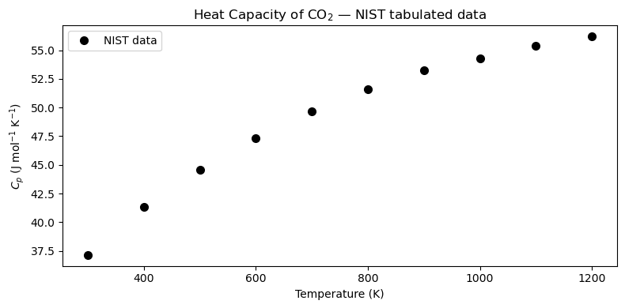
12.2 Polynomial Basics#
A degree-\(n\) polynomial is:
NumPy stores polynomial coefficients in descending order (highest power first). Three key tools:
Function |
Purpose |
|---|---|
|
Create a callable polynomial object |
|
Evaluate polynomial at \(x\) |
|
Least-squares fit: returns coefficients |
Convention: coeffs = [a_n, a_{n-1}, ..., a_1, a_0] — highest power first.
The coefficient array#
Say you have \(p(x) = 3x^2 + 5x - 2\). NumPy represents this as [3, 5, -2]:
index: 0 1 2
value: [3, 5, -2]
↑ ↑ ↑
x² x¹ x⁰
np.poly1d(coeffs) — callable polynomial object#
Wraps the coefficient list into an object you can call like a function:
p = np.poly1d([3, 5, -2])
p(1) # → 3(1)² + 5(1) - 2 = 6
p(0) # → -2
Bonus methods: p.deriv() (derivative), p.integ() (integral), p.roots (zeros).
np.polyval(coeffs, x) — evaluate from the list directly#
Same result, no object needed. Works on scalars or arrays:
np.polyval([3, 5, -2], 1) # → 6
np.polyval([3, 5, -2], [0, 1, 2]) # → [-2, 6, 20]
Use this when you only need values and don’t need derivatives/integrals.
np.polyfit(x, y, deg) — find best-fit coefficients#
Given data points, returns a coefficient array in the same descending convention:
coeffs = np.polyfit(x_data, y_data, deg=3) # fit → coeffs
p = np.poly1d(coeffs) # wrap → callable
y_fit = p(x_fine) # evaluate on dense grid
# or equivalently:
y_fit = np.polyval(coeffs, x_fine)
Use poly1d when you also need .deriv() / .integ() / .roots; use polyval when you just need numbers.
# ── Coefficient convention demo ───────────────────────────────────────────
# p(x) = 3x² + 5x - 2 → coeffs = [3, 5, -2] (descending order)
coeffs_demo = [3, 5, -2]
p_demo = np.poly1d(coeffs_demo)
print("poly1d pretty-print:")
print(p_demo)
# Evaluate at a few points
xs = [0, 1, 2]
print("\nx poly1d polyval manual")
for x in xs:
manual = 3*x**2 + 5*x - 2
print(f"{x} {p_demo(x):6.1f} {np.polyval(coeffs_demo, x):6.1f} {manual:6.1f}")
# polyval works on arrays too
print("\npolyval on array [0,1,2]:", np.polyval(coeffs_demo, xs))
# Derivative and integral via poly1d
print("\nDerivative p'(x):")
print(p_demo.deriv())
print("Indefinite integral ∫p dx (+ C):")
print(p_demo.integ())
print("Roots (p(x)=0):", p_demo.roots.round(4))
poly1d pretty-print:
2
3 x + 5 x - 2
x poly1d polyval manual
0 -2.0 -2.0 -2.0
1 6.0 6.0 6.0
2 20.0 20.0 20.0
polyval on array [0,1,2]: [-2 6 20]
Derivative p'(x):
6 x + 5
Indefinite integral ∫p dx (+ C):
3 2
1 x + 2.5 x - 2 x
Roots (p(x)=0): [-2. 0.3333]
# Define p(x) = 2x^3 - 3x^2 + x - 5 (coefficients in descending order)
coeffs = [2, -3, 1, -5]
p = np.poly1d(coeffs)
print("Polynomial p(x):")
print(p)
# Evaluate at x = 2
x_val = 2.0
print(f"\np({x_val}) using poly1d : {p(x_val):.4f}")
print(f"p({x_val}) using polyval : {np.polyval(coeffs, x_val):.4f}")
# Manual: 2(8) - 3(4) + 1(2) - 5 = 16 - 12 + 2 - 5 = 1
print(f"Manual check : {2*x_val**3 - 3*x_val**2 + 1*x_val - 5:.4f}")
Polynomial p(x):
3 2
2 x - 3 x + 1 x - 5
p(2.0) using poly1d : 1.0000
p(2.0) using polyval : 1.0000
Manual check : 1.0000
# Plot the polynomial over [-1, 3]
x = np.linspace(-1, 3, 200)
y = np.polyval(coeffs, x)
fig, ax = plt.subplots(figsize=(8, 4))
ax.plot(x, y, 'b-', linewidth=2, label=r'$p(x) = 2x^3 - 3x^2 + x - 5$')
ax.axhline(0, color='k', linewidth=0.8, linestyle='--')
ax.set_xlabel('x')
ax.set_ylabel('p(x)')
ax.set_title('Example cubic polynomial')
ax.legend()
plt.tight_layout()
plt.show()
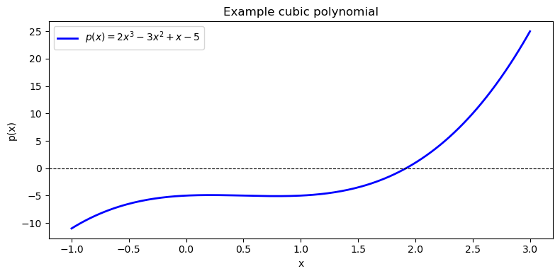
12.3 Least-Squares Polynomial Fitting#
np.polyfit(x, y, deg) finds the degree-deg polynomial coefficients that minimize the sum of squared residuals:
This is ordinary least squares applied to a polynomial basis. The function returns coefficients in descending order (highest power first), just like np.poly1d expects.
12.3.1 Fitting Cp(T) with Different Degrees#
We fit the CO\(_2\) data with degree 1, 2, and 3 polynomials and compare the results visually.
# ── Fit Cp(T) with degree 1, 2, 3 polynomials ────────────────────────────────
T_fine = np.linspace(280, 1250, 300)
degrees = [1, 2, 3]
colors = ['tab:red', 'tab:orange', 'tab:blue']
fits = {} # store coefficient arrays keyed by degree
for deg in degrees:
fits[deg] = np.polyfit(T_data, Cp_data, deg)
fig, ax = plt.subplots(figsize=(9, 4))
ax.plot(T_data, Cp_data, 'ko', markersize=7, zorder=5, label='NIST data')
for deg, color in zip(degrees, colors):
ax.plot(T_fine, np.polyval(fits[deg], T_fine),
color=color, linewidth=2, label=f'Degree {deg}')
ax.set_xlabel('Temperature (K)')
ax.set_ylabel(r'$C_p$ (J mol$^{-1}$ K$^{-1}$)')
ax.set_title(r'Polynomial fits to CO$_2$ $C_p$ data')
ax.legend()
plt.tight_layout()
plt.show()
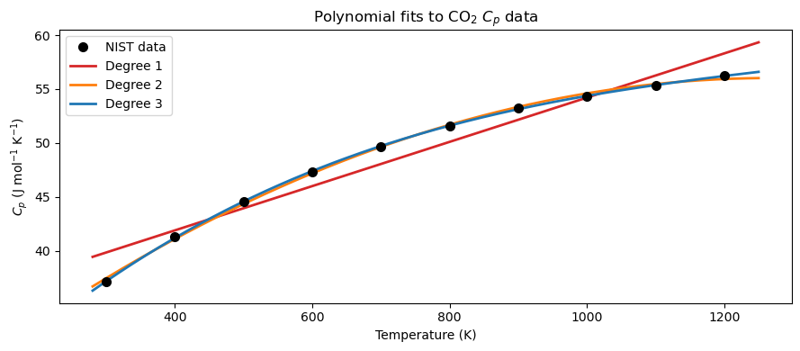
The residual \(e_i\) is the vertical distance between a measured data point and the model’s prediction at that same \(x\):
A positive residual means the model underpredicts; negative means it overpredicts. A good fit has residuals that are small and scattered randomly around zero.
# ── Residual stem plots for each degree ──────────────────────────────────────
fig, axes = plt.subplots(1, 3, figsize=(12, 4), sharey=True)
for ax, deg, color in zip(axes, degrees, colors):
Cp_pred = np.polyval(fits[deg], T_data)
residuals = Cp_data - Cp_pred
ax.stem(T_data, residuals, linefmt=color, markerfmt='o', basefmt='k-')
ax.axhline(0, color='k', linewidth=1)
ax.set_xlabel('Temperature (K)')
ax.set_title(f'Degree {deg} residuals')
axes[0].set_ylabel(r'$C_p$ residual (J mol$^{-1}$ K$^{-1}$)')
plt.tight_layout()
plt.show()
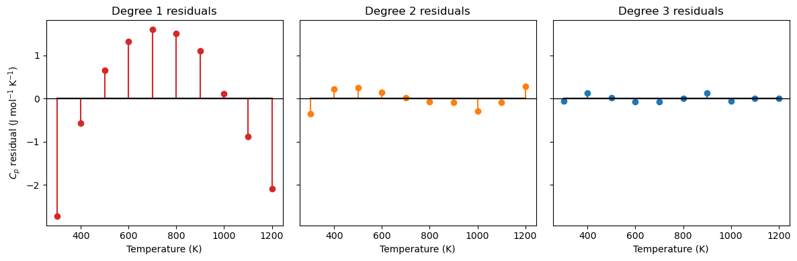
12.3.2 Fit Quality Metrics: MAE, MSE, and \(R^2\)#
Given residuals \(e_i = y_i - p(x_i)\), where:
\(y_i\) — observed (measured) value at point \(i\)
\(p(x_i)\) — model-predicted value at the same point \(x_i\)
three standard metrics quantify how well the model fits the data:
Metric |
Full name |
Units |
Interpretation |
|---|---|---|---|
MAE |
Mean Absolute Error |
same as \(y\) |
Average magnitude of error; easy to interpret |
MSE |
Mean Squared Error |
\(y^2\) |
Penalizes large errors more heavily; used by least-squares optimization |
\(R^2\) |
Coefficient of Determination |
dimensionless |
Fraction of variance explained by the model; 1 = perfect |
Why square in MSE (and not just use MAE)?
Penalize large errors more heavily — an error of 2 contributes 4× more than an error of 1; the fit is driven by the worst offenders
Smooth, differentiable objective — \(e_i^2\) has a clean derivative everywhere, which is what allows least-squares to be solved analytically; \(|e_i|\) is not differentiable at zero
Interpreting \(R^2\): The denominator \(\sum_i(y_i - \bar{y})^2\) is the total variance in the data (how spread out the measurements are). The numerator \(\sum_i e_i^2\) is the variance the model failed to explain. Subtracting their ratio from 1 gives the fraction the model does explain.
\(R^2 = 1\) — perfect fit; every residual is zero
\(R^2 = 0\) — the model does no better than just predicting \(\bar{y}\) for every point
\(R^2 < 0\) — the model is worse than the mean (a sign something is seriously wrong)
import numpy as np
# ── MAE, MSE, R² for each polynomial degree ──────────────────────────────────
SS_tot = np.sum((Cp_data - np.mean(Cp_data))**2)
print(f"{'Degree':>6} {'MAE':>18} {'MSE':>18} {'R²':>10}")
print(f"{'':>6} {'(J/mol/K)':>18} {'(J/mol/K)²':>18} {'':>10}")
print("-" * 60)
for deg in degrees:
Cp_pred = np.polyval(fits[deg], T_data)
residuals = Cp_data - Cp_pred
MAE = np.mean(np.abs(residuals))
MSE = np.mean(residuals**2)
R2 = 1.0 - np.sum(residuals**2) / SS_tot
print(f"{deg:>6} {MAE:>18.6f} {MSE:>18.6f} {R2:>10.6f}")
Degree MAE MSE R²
(J/mol/K) (J/mol/K)²
------------------------------------------------------------
1 1.256000 2.114124 0.942543
2 0.179212 0.043519 0.998817
3 0.052923 0.004851 0.999868
12.3.3 MAE vs \(R^2\): They Can Disagree#
MAE and \(R^2\) measure different things, so a model can score well on one and poorly on the other.
Case A — Low MAE, low \(R^2\): All errors are small in absolute magnitude, but the data has almost no variance. The model barely outperforms the flat mean, so \(R^2\) stays near zero even though MAE looks fine.
Case B — High MAE, high \(R^2\): The data has a huge range (high variance). Errors are large in absolute units, giving a high MAE — but the model tracks the trend so well that \(R^2\) is still close to 1.
The takeaway: always report both. MAE tells you the error in physical units (is it acceptable for your application?); \(R^2\) tells you whether the model captures the structure of the data.
import numpy as np
import matplotlib.pyplot as plt
def metrics(y, y_pred):
e = y - y_pred
mae = np.mean(np.abs(e))
mse = np.mean(e**2)
ss_res = np.sum(e**2)
ss_tot = np.sum((y - np.mean(y))**2)
r2 = 1 - ss_res / ss_tot
return mae, mse, r2
# ── Case A: Low MAE, Low R² ───────────────────────────────────────────────────
# Data clusters tightly around 10.0 (very low variance).
# The model predicts a constant 10.1 — errors are tiny, but so is the spread,
# so R² is low because the model barely beats the mean.
np.random.seed(0)
x_A = np.linspace(0, 10, 20)
y_A = 10.0 + np.random.uniform(-0.05, 0.05, 20) # near-flat data, range ≈ 0.1
yp_A = np.full_like(y_A, 10.1) # constant prediction slightly off
mae_A, mse_A, r2_A = metrics(y_A, yp_A)
print("Case A — Low MAE, Low R²")
print(f" Data range : {y_A.min():.3f} – {y_A.max():.3f} (spread ≈ {y_A.max()-y_A.min():.3f})")
print(f" MAE = {mae_A:.4f} MSE = {mse_A:.6f} R² = {r2_A:.4f}")
# ── Case B: High MAE, High R² ─────────────────────────────────────────────────
# Data spans 0–10 000 (huge variance) with a clean linear trend.
# A linear fit tracks it perfectly (R² ≈ 1), but residuals are ~50 units → high MAE.
x_B = np.linspace(0, 10, 20)
y_B = 1000 * x_B + np.random.uniform(-50, 50, 20) # large range, noisy
coeffs_B = np.polyfit(x_B, y_B, 1)
yp_B = np.polyval(coeffs_B, x_B)
mae_B, mse_B, r2_B = metrics(y_B, yp_B)
print("\nCase B — High MAE, High R²")
print(f" Data range : {y_B.min():.1f} – {y_B.max():.1f} (spread ≈ {y_B.max()-y_B.min():.1f})")
print(f" MAE = {mae_B:.4f} MSE = {mse_B:.2f} R² = {r2_B:.4f}")
# ── Plot ──────────────────────────────────────────────────────────────────────
fig, axes = plt.subplots(1, 2, figsize=(12, 4))
ax = axes[0]
ax.plot(x_A, y_A, 'ko', markersize=6, label='data')
ax.plot(x_A, yp_A, 'r--', linewidth=2, label='prediction (constant 10.1)')
ax.set_title(f'Case A: Low MAE, Low $R^2$\nMAE={mae_A:.4f}, $R^2$={r2_A:.3f}')
ax.set_xlabel('x'); ax.set_ylabel('y')
ax.legend()
ax = axes[1]
ax.plot(x_B, y_B, 'ko', markersize=6, label='data')
ax.plot(x_B, yp_B, 'b-', linewidth=2, label='linear fit')
ax.set_title(f'Case B: High MAE, High $R^2$\nMAE={mae_B:.1f}, $R^2$={r2_B:.4f}')
ax.set_xlabel('x'); ax.set_ylabel('y')
ax.legend()
plt.tight_layout()
plt.show()
Case A — Low MAE, Low R²
Data range : 9.952 – 10.046 (spread ≈ 0.094)
MAE = 0.0918 MSE = 0.009197 R² = -11.0804
Case B — High MAE, High R²
Data range : 47.9 – 10018.2 (spread ≈ 9970.3)
MAE = 21.6016 MSE = 721.01 R² = 0.9999
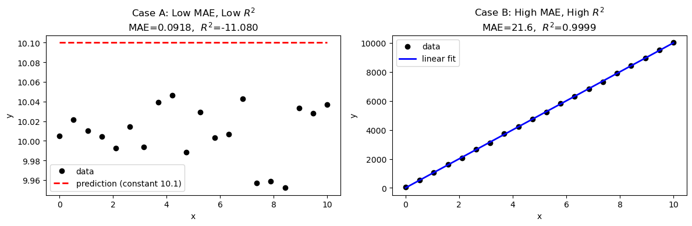
12.3.4 Overfitting: When Higher Degree Hurts#
Adding more polynomial terms always reduces training error, but can create overfitting: the polynomial wiggles between data points and performs poorly outside the training range.
Why does adding terms always reduce training error? With \(N\) data points and a degree-\((N-1)\) polynomial, you have exactly enough free coefficients to pass through every point perfectly — residuals become zero by construction. But this is not a good model; it has memorized the noise in the data rather than learned the underlying trend.
Degrees of freedom = number of adjustable parameters (coefficients) available to fit the data. A degree-\(n\) polynomial has \(n+1\) coefficients, so \(n+1\) degrees of freedom.
Degree |
Degrees of freedom |
Behavior |
|---|---|---|
High (\(N-1\)) |
\(N\) — one per data point |
Zero training error · High variance · Overfitting risk |
Low–moderate |
\(\ll N\) |
Nonzero residual · Better generalization · Controlled flexibility |
The bias-variance tradeoff:
A low-degree polynomial is too rigid — it misses real structure in the data
A high-degree polynomial is too flexible — it chases every fluctuation and noise spike
The right degree sits in between: flexible enough to capture the physical trend, not so flexible that it fits the noise. A practical warning sign: if the polynomial behaves wildly between data points or shoots off just outside the data range, the degree is too high.
Here we deliberately use degree 9 (with only 10 data points) to illustrate the problem.
import numpy as np
import matplotlib.pyplot as plt
# ── Wiggly dataset: a signal with genuine oscillations + small noise ──────────
# Imagine a periodic reaction yield measured across 12 experimental conditions.
np.random.seed(3)
x_wig = np.linspace(0, 4 * np.pi, 14)
y_wig = np.sin(x_wig) + 0.5 * np.sin(2 * x_wig) + np.random.normal(1, 0.15, 14) # np.sin(x_wig) + 0.5 * np.sin(2 * x_wig) +
x_fine = np.linspace(0, 4 * np.pi, 300)
# Fit with degree 2, 5, and 9
degs = [2, 5, 9]
colors = ['tab:red', 'tab:green', 'tab:blue']
fits_w = {d: np.polyfit(x_wig, y_wig, d) for d in degs}
# ── Metrics ───────────────────────────────────────────────────────────────────
SS_tot_w = np.sum((y_wig - np.mean(y_wig))**2)
print(f"{'Degree':>6} {'MAE':>10} {'R²':>8} {'Note'}")
print("-" * 48)
notes = {2: 'underfit — misses oscillations',
5: 'good fit — captures structure',
9: 'starts to overfit noise'}
for d in degs:
pred = np.polyval(fits_w[d], x_wig)
res = y_wig - pred
mae = np.mean(np.abs(res))
r2 = 1 - np.sum(res**2) / SS_tot_w
print(f"{d:>6} {mae:>10.4f} {r2:>8.4f} {notes[d]}")
# ── Plot: fits ────────────────────────────────────────────────────────────────
fig, axes = plt.subplots(2, 3, figsize=(13, 7))
for col, (d, color) in enumerate(zip(degs, colors)):
y_pred_fine = np.polyval(fits_w[d], x_fine)
y_pred_data = np.polyval(fits_w[d], x_wig)
residuals = y_wig - y_pred_data
mae = np.mean(np.abs(residuals))
r2 = 1 - np.sum(residuals**2) / SS_tot_w
# Top row: fit vs data
ax = axes[0, col]
ax.plot(x_fine, y_pred_fine, color=color, linewidth=2, label=f'Degree {d}')
ax.plot(x_wig, y_wig, 'ko', markersize=6, zorder=5, label='data')
ax.set_title(f'Degree {d}\nMAE={mae:.3f}, $R^2$={r2:.3f}')
ax.set_xlabel('x'); ax.set_ylabel('y')
ax.legend(fontsize=8)
# Bottom row: residuals
ax = axes[1, col]
ax.stem(x_wig, residuals, linefmt=color, markerfmt='o', basefmt='k-')
ax.axhline(0, color='k', linewidth=1)
ax.set_title(f'Degree {d} residuals')
ax.set_xlabel('x'); ax.set_ylabel('residual')
plt.suptitle('Wiggly data: degree 2 underfits, degree 5 is appropriate, degree 9 starts overfitting',
fontsize=10, y=1.01)
plt.tight_layout()
plt.show()
Degree MAE R² Note
------------------------------------------------
2 0.6030 0.1219 underfit — misses oscillations
5 0.2763 0.7914 good fit — captures structure
9 0.1583 0.9236 starts to overfit noise
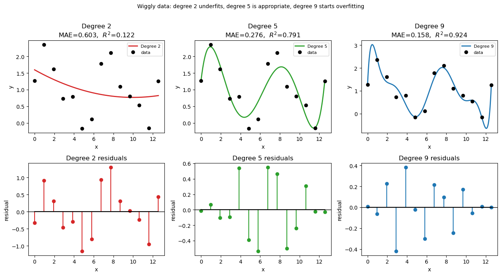
# ── Overfitting demonstration ─────────────────────────────────────────────────
coeffs_deg3 = np.polyfit(T_data, Cp_data, 3)
coeffs_deg9 = np.polyfit(T_data, Cp_data, 9)
T_ext = np.linspace(200, 1300, 400) # extend beyond the data range
fig, ax = plt.subplots(figsize=(9, 4))
ax.plot(T_data, Cp_data, 'ko', markersize=7, zorder=5, label='NIST data')
ax.plot(T_ext, np.polyval(coeffs_deg3, T_ext),
'tab:blue', linewidth=2, label='Degree 3 (good fit)')
ax.plot(T_ext, np.polyval(coeffs_deg9, T_ext),
'tab:red', linewidth=2, linestyle='--', label='Degree 9 (overfit)')
ax.set_ylim(30, 80)
ax.set_xlabel('Temperature (K)')
ax.set_ylabel(r'$C_p$ (J mol$^{-1}$ K$^{-1}$)')
ax.set_title('Overfitting: degree-9 polynomial fits training data perfectly but extrapolates badly')
ax.legend()
plt.tight_layout()
plt.show()
print("Lesson: For smooth physical data, a low-degree polynomial (2-4) is usually best.")
print("Use R² and visual inspection — not just training error — to choose degree.")
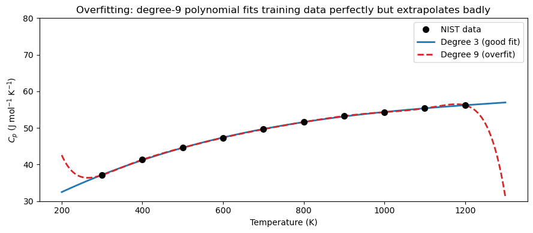
Lesson: For smooth physical data, a low-degree polynomial (2-4) is usually best.
Use R² and visual inspection — not just training error — to choose degree.
12.3.5 Using the Fit: Integrating \(C_p\) Analytically#
With the degree-3 fit in hand, we integrate \(C_p(T)\) to compute the enthalpy change:
np.poly1d exposes a .integ() method that returns the antiderivative polynomial.
# ── Integrate Cp from T1 to T2 using the degree-3 fit ────────────────────────
p3 = np.poly1d(np.polyfit(T_data, Cp_data, 3))
P3 = p3.integ() # antiderivative (integration constant = 0)
T1, T2 = 400.0, 900.0 # K
dH = P3(T2) - P3(T1) # J/mol
print("Degree-3 Cp polynomial fit:")
print(p3)
print(f"\nIntegral of Cp from {T1:.0f} K to {T2:.0f} K:")
print(f" Delta_H = {dH:.2f} J/mol = {dH/1000:.4f} kJ/mol")
Degree-3 Cp polynomial fit:
3 2
1.119e-08 x - 4.498e-05 x + 0.06745 x + 20.71
Integral of Cp from 400 K to 900 K:
Delta_H = 24067.83 J/mol = 24.0678 kJ/mol
12.4 Taylor Series#
Core idea: Any smooth function can be exactly represented as an infinite polynomial, as long as you know all of its derivatives at a single point. The Taylor series is that polynomial.
Why does this work? A polynomial is fully described by its coefficients. A smooth function is fully described by its derivatives. The Taylor series connects the two: each coefficient \(\frac{f^{(n)}(a)}{n!}\) is chosen so that the polynomial’s \(n\)-th derivative at \(x = a\) exactly matches the function’s \(n\)-th derivative at \(x = a\). Match all derivatives → match the function.
Why is this useful in engineering?
Nonlinear functions (\(e^x\), \(\sin x\), \(\ln x\)) are hard to integrate, differentiate, or solve algebraically. Their polynomial approximations are easy.
Truncating after a few terms gives a simple formula accurate enough for a limited range — this is the basis of linearization, which appears everywhere in reactor design, control theory, and thermodynamics.
A Taylor series expresses a smooth function as an infinite polynomial centered at a point \(a\):
where:
\(f^{(n)}(a)\) — the \(n\)-th derivative of \(f\) evaluated at the center point \(a\)
\(n!\) — factorial, which prevents terms from growing too fast and ensures convergence
\((x - a)^n\) — measures how far \(x\) is from the center; terms get smaller as \(n\) increases (for \(x\) near \(a\))
Truncation: In practice we stop after \(N\) terms, giving an \(N\)-th order approximation. The error from truncation is called the truncation error, and it shrinks as either \(N\) increases or \(x\) moves closer to \(a\).
A Maclaurin series is simply a Taylor series centered at \(a = 0\). The two key series every engineer should know:
Note that \(\sin x\) only contains odd powers — this reflects the fact that \(\sin x\) is an odd function (\(\sin(-x) = -\sin x\)). The alternating signs (\(+, -, +, -\ldots\)) are what keep the series from diverging.
12.4.1 Convergence of Partial Sums#
We build the partial sums term by term and watch the approximation converge to the exact function as more terms are included.
# ── Taylor partial sums: exp(x) and sin(x) ──────────────────────────────────
x = np.linspace(-3, 3, 300)
fig, axes = plt.subplots(1, 2, figsize=(12, 4))
# -- exp(x) --
ax = axes[0]
ax.plot(x, np.exp(x), 'k-', linewidth=2.5, label='exact $e^x$')
approx = np.zeros_like(x)
for n in range(7):
approx = approx + x**n / factorial(n)
if n in [1, 2, 3, 5]:
ax.plot(x, approx, linestyle='--', linewidth=1.5, label=f'{n+1} terms')
ax.set_ylim(-2, 15)
ax.set_xlabel('x')
ax.set_ylabel(r'$e^x$')
ax.set_title(r'Taylor series: $e^x$ around $x=0$')
ax.legend(fontsize=8)
# -- sin(x) --
ax = axes[1]
ax.plot(x, np.sin(x), 'k-', linewidth=2.5, label=r'exact $\sin x$')
approx = np.zeros_like(x)
for k in range(5):
n = 2*k + 1
sign = (-1)**k
approx = approx + sign * x**n / factorial(n)
if k in [0, 1, 2, 3]:
ax.plot(x, approx, linestyle='--', linewidth=1.5, label=f'{k+1} term(s)')
ax.set_ylim(-2, 2)
ax.set_xlabel('x')
ax.set_ylabel(r'$\sin x$')
ax.set_title(r'Taylor series: $\sin x$ around $x=0$')
ax.legend(fontsize=8)
plt.tight_layout()
plt.show()
---------------------------------------------------------------------------
NameError Traceback (most recent call last)
Cell In[13], line 11
9 approx = np.zeros_like(x)
10 for n in range(7):
---> 11 approx = approx + x**n / factorial(n)
12 if n in [1, 2, 3, 5]:
13 ax.plot(x, approx, linestyle='--', linewidth=1.5, label=f'{n+1} terms')
NameError: name 'factorial' is not defined
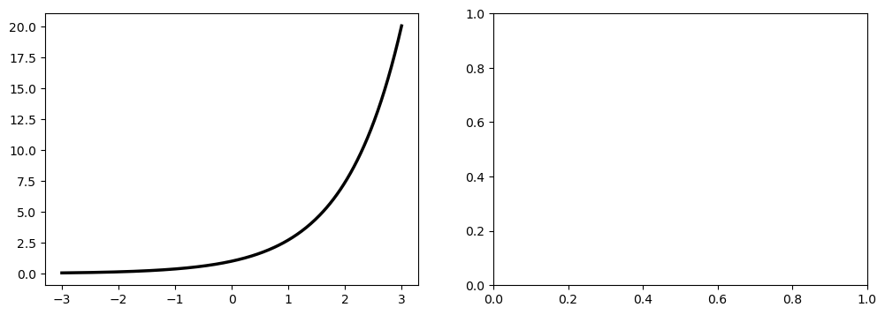
# ── Numerical convergence: error vs number of terms for exp(1) ───────────────
exact = np.e
print(f"Exact e = {exact:.10f}\n")
print(f"{'N terms':>8} {'Approximation':>16} {'Abs Error':>12}")
print("-" * 42)
approx = 0.0
for n in range(10):
approx += 1.0**n / factorial(n)
print(f"{n+1:>8} {approx:>16.10f} {abs(approx - exact):>12.2e}")
Exact e = 2.7182818285
N terms Approximation Abs Error
------------------------------------------
1 1.0000000000 1.72e+00
2 2.0000000000 7.18e-01
3 2.5000000000 2.18e-01
4 2.6666666667 5.16e-02
5 2.7083333333 9.95e-03
6 2.7166666667 1.62e-03
7 2.7180555556 2.26e-04
8 2.7182539683 2.79e-05
9 2.7182787698 3.06e-06
10 2.7182815256 3.03e-07
12.4.2 ChE Application: Linearizing the Arrhenius Equation#
The Arrhenius rate constant is nonlinear in temperature:
Applying a first-order Taylor expansion around a reference temperature \(T_0\):
This linearization is widely used in reactor stability analysis and temperature control design. It is accurate for small deviations \(|T - T_0|\) but degrades further from \(T_0\).
# ── Arrhenius linearization around T0 ────────────────────────────────────────
R = 8.314 # J/(mol K)
Ea = 75_000.0 # J/mol (activation energy)
A_f = 1e8 # pre-exponential factor (s^-1)
T0 = 500.0 # K (linearization reference)
k_exact = lambda T: A_f * np.exp(-Ea / (R * T))
k0 = k_exact(T0)
dk_dT0 = k0 * Ea / (R * T0**2) # dk/dT evaluated at T0
k_lin = lambda T: k0 + dk_dT0 * (T - T0)
T_arr = np.linspace(420, 590, 300)
fig, ax = plt.subplots(figsize=(8, 4))
ax.plot(T_arr, k_exact(T_arr), 'k-', linewidth=2, label='Exact Arrhenius')
ax.plot(T_arr, k_lin(T_arr), 'r--', linewidth=2,
label=f'Linearized at $T_0 = {T0:.0f}$ K')
ax.axvline(T0, color='gray', linestyle=':', linewidth=1.2)
ax.set_xlabel('Temperature (K)')
ax.set_ylabel(r'$k(T)$ (s$^{-1}$)')
ax.set_title('Arrhenius linearization via first-order Taylor expansion')
ax.legend()
plt.tight_layout()
plt.show()
# Quantify error at several deviations from T0
print(f"{'Delta_T (K)':>12} {'Exact k':>12} {'Linear k':>12} {'Error %':>10}")
print("-" * 52)
for dT in [-50, -20, -10, 0, 10, 20, 50]:
T_val = T0 + dT
err = 100.0 * abs(k_exact(T_val) - k_lin(T_val)) / k_exact(T_val)
print(f"{dT:>+12.0f} {k_exact(T_val):>12.4f} {k_lin(T_val):>12.4f} {err:>10.2f}")
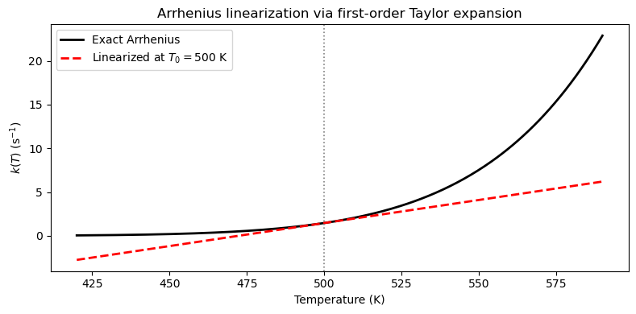
Delta_T (K) Exact k Linear k Error %
----------------------------------------------------
-50 0.1967 -1.1746 696.99
-20 0.6887 0.4065 40.98
-10 1.0107 0.9335 7.63
+0 1.4606 1.4606 0.00
+10 2.0805 1.9876 4.46
+20 2.9234 2.5146 13.98
+50 7.5307 4.0957 45.61
12.5 Polynomial Interpolation#
Interpolation constructs a curve that passes exactly through all given data points. With \(n+1\) distinct points, there is a unique polynomial of degree \(\leq n\) that interpolates them.
The Lagrange form writes this polynomial explicitly:
Each basis polynomial \(L_i\) equals 1 at \(x_i\) and 0 at every other node.
12.5.1 Lagrange Interpolation from Scratch#
def lagrange_interp(x_nodes, y_nodes, x_eval):
"""Evaluate the Lagrange interpolating polynomial at x_eval.
Parameters
----------
x_nodes : array-like interpolation nodes
y_nodes : array-like function values at nodes
x_eval : array-like points at which to evaluate
Returns
-------
p : ndarray polynomial values at x_eval
"""
x_nodes = np.asarray(x_nodes, dtype=float)
y_nodes = np.asarray(y_nodes, dtype=float)
x_eval = np.asarray(x_eval, dtype=float)
n = len(x_nodes)
p = np.zeros_like(x_eval)
for i in range(n):
L_i = np.ones_like(x_eval)
for j in range(n):
if j != i:
L_i *= (x_eval - x_nodes[j]) / (x_nodes[i] - x_nodes[j])
p += y_nodes[i] * L_i
return p
# Test: interpolate sin(x) at 5 equally spaced nodes on [0, pi]
x_nodes = np.linspace(0, np.pi, 5)
y_nodes = np.sin(x_nodes)
x_fine = np.linspace(0, np.pi, 300)
y_lag = lagrange_interp(x_nodes, y_nodes, x_fine)
fig, ax = plt.subplots(figsize=(8, 4))
ax.plot(x_fine, np.sin(x_fine), 'k-', linewidth=2, label='exact sin(x)')
ax.plot(x_fine, y_lag, 'b--', linewidth=2, label='Lagrange (5 nodes)')
ax.plot(x_nodes, y_nodes, 'ro', markersize=8, zorder=5, label='nodes')
ax.set_xlabel('x')
ax.set_ylabel('y')
ax.set_title('Lagrange interpolation of sin(x)')
ax.legend()
plt.tight_layout()
plt.show()
max_err = np.max(np.abs(np.sin(x_fine) - y_lag))
print(f"Max interpolation error: {max_err:.2e}")
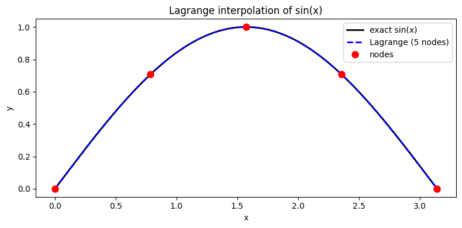
Max interpolation error: 1.81e-03
SciPy also provides scipy.interpolate.lagrange, which constructs a poly1d object directly:
# ── scipy.interpolate.lagrange ────────────────────────────────────────────────
p_lag = lagrange(x_nodes, y_nodes) # returns a poly1d object
print("Lagrange polynomial (scipy):")
print(p_lag)
x_test = np.pi / 4
print(f"\np(pi/4) = {p_lag(x_test):.8f}")
print(f"sin(pi/4) = {np.sin(x_test):.8f}")
print(f"Error = {abs(p_lag(x_test) - np.sin(x_test)):.2e}")
Lagrange polynomial (scipy):
4 3 2
0.03758 x - 0.2361 x + 0.05829 x + 0.982 x
p(pi/4) = 0.70710678
sin(pi/4) = 0.70710678
Error = 7.77e-16
12.5.2 Runge’s Phenomenon#
High-degree polynomial interpolation on equally spaced nodes can produce wild oscillations near the edges of the interval — even though the interpolated function itself is smooth. This is called Runge’s phenomenon.
The classic example is:
As the number of equally spaced nodes increases, the interpolating polynomial diverges at the edges of the interval.
# ── Runge's phenomenon ────────────────────────────────────────────────────────
runge = lambda x: 1.0 / (1.0 + 25.0 * x**2)
x_fine = np.linspace(-1, 1, 500)
fig, axes = plt.subplots(1, 2, figsize=(12, 4))
for ax, n_nodes in zip(axes, [6, 14]):
x_nodes = np.linspace(-1, 1, n_nodes)
y_nodes = runge(x_nodes)
y_interp = lagrange_interp(x_nodes, y_nodes, x_fine)
ax.plot(x_fine, runge(x_fine), 'k-', linewidth=2.5, label='Exact $f(x)$')
ax.plot(x_fine, y_interp, 'r--', linewidth=2,
label=f'Polynomial ({n_nodes} nodes, deg {n_nodes-1})')
ax.plot(x_nodes, y_nodes, 'bo', markersize=5, zorder=5, label='nodes')
ax.set_ylim(-0.5, 1.5)
ax.set_xlabel('x')
ax.set_ylabel('f(x)')
ax.set_title(f"Runge's phenomenon: {n_nodes} equally spaced nodes")
ax.legend(fontsize=8)
plt.tight_layout()
plt.show()
print("Oscillations grow as n increases — this is Runge's phenomenon.")
print("Fix: use piecewise splines instead of a single high-degree polynomial.")
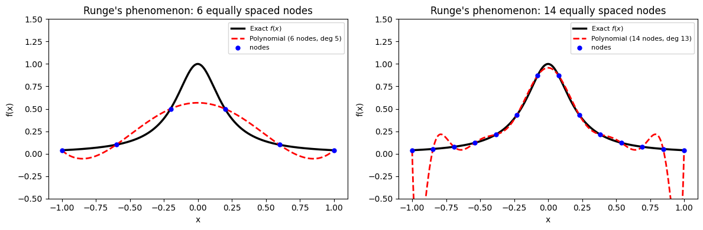
Oscillations grow as n increases — this is Runge's phenomenon.
Fix: use piecewise splines instead of a single high-degree polynomial.
12.6 Spline Interpolation#
A spline divides the data into intervals and fits a low-degree polynomial on each sub-interval, joining them smoothly at the knots (the data points).
A cubic spline uses degree-3 polynomials on each interval and enforces:
The curve passes exactly through every data point
\(p\), \(p'\), and \(p''\) are continuous at every interior knot
This avoids Runge’s phenomenon and produces physically smooth, accurate curves.
Tool |
Description |
|---|---|
|
Natural/not-a-knot cubic spline; supports derivative evaluation |
|
Piecewise linear |
|
Piecewise cubic (convenient but less flexible than CubicSpline) |
12.6.1 Spline vs Polynomial on the Runge Example#
# ── Cubic spline vs high-degree polynomial on Runge's function ────────────────
n_nodes = 14
x_nodes = np.linspace(-1, 1, n_nodes)
y_nodes = runge(x_nodes)
x_fine = np.linspace(-1, 1, 500)
# High-degree polynomial
y_poly = lagrange_interp(x_nodes, y_nodes, x_fine)
# Cubic spline
cs = CubicSpline(x_nodes, y_nodes)
y_spline = cs(x_fine)
fig, ax = plt.subplots(figsize=(9, 4))
ax.plot(x_fine, runge(x_fine), 'k-', linewidth=2.5, label='Exact $f(x)$')
ax.plot(x_fine, y_poly, 'r--', linewidth=2,
label=f'Polynomial (deg {n_nodes-1}, Runge oscillation)')
ax.plot(x_fine, y_spline, 'b-', linewidth=2, label='Cubic spline')
ax.plot(x_nodes, y_nodes, 'ko', markersize=5, zorder=5, label='nodes')
ax.set_ylim(-0.5, 1.5)
ax.set_xlabel('x')
ax.set_ylabel('f(x)')
ax.set_title("Spline vs polynomial interpolation on Runge's function")
ax.legend(fontsize=9)
plt.tight_layout()
plt.show()
err_poly = np.max(np.abs(runge(x_fine) - y_poly))
err_spline = np.max(np.abs(runge(x_fine) - y_spline))
print(f"Max error — polynomial : {err_poly:.4f}")
print(f"Max error — spline : {err_spline:.4f}")
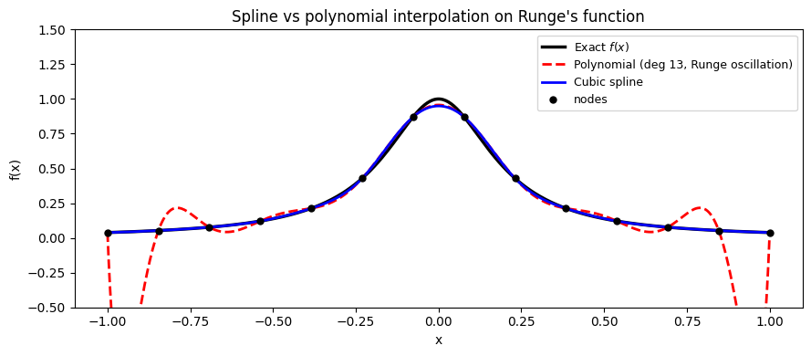
Max error — polynomial : 1.0701
Max error — spline : 0.0504
12.6.2 interp1d: Linear and Cubic Interpolation#
scipy.interpolate.interp1d is a convenient general-purpose wrapper. The kind argument selects the order: 'linear', 'quadratic', or 'cubic'.
# ── interp1d: linear vs cubic on a small synthetic dataset ───────────────────
x_pts = np.array([0.0, 1.0, 2.0, 3.0, 4.0, 5.0])
y_pts = np.array([0.0, 0.8, 0.9, 0.1, -0.8, -1.0])
x_fine = np.linspace(0, 5, 300)
f_lin = interp1d(x_pts, y_pts, kind='linear')
f_cub = interp1d(x_pts, y_pts, kind='cubic')
fig, ax = plt.subplots(figsize=(8, 4))
ax.plot(x_pts, y_pts, 'ko', markersize=8, zorder=5, label='data points')
ax.plot(x_fine, f_lin(x_fine), 'g--', linewidth=2, label='linear interp')
ax.plot(x_fine, f_cub(x_fine), 'b-', linewidth=2, label='cubic interp')
ax.set_xlabel('x')
ax.set_ylabel('y')
ax.set_title('`interp1d`: linear vs cubic interpolation')
ax.legend()
plt.tight_layout()
plt.show()
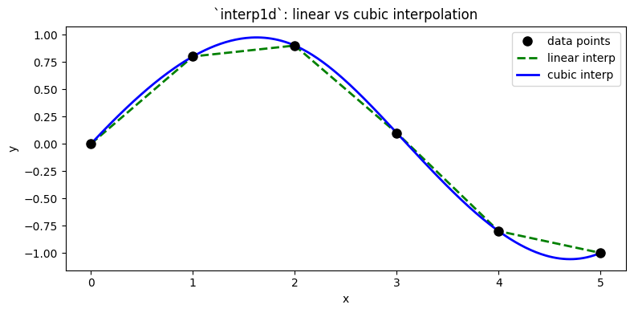
12.6.3 ChE Application: Interpolating Steam Table Data#
Steam tables give the enthalpy of vaporization \(H_{\rm vap}\) at discrete temperatures. For heat exchanger design we need \(H_{\rm vap}\) at arbitrary intermediate conditions.
Below is a hardcoded excerpt from saturated-water steam tables (Smith, Van Ness & Abbott):
\(T\) (°C) |
\(P_{\rm sat}\) (kPa) |
\(H_{\rm vap}\) (kJ/kg) |
|---|---|---|
50 |
12.35 |
2382.7 |
75 |
38.58 |
2321.4 |
100 |
101.3 |
2256.9 |
125 |
232.1 |
2188.5 |
150 |
476.2 |
2113.7 |
175 |
892.5 |
2031.1 |
200 |
1554.0 |
1939.8 |
225 |
2550.0 |
1837.8 |
250 |
3976.0 |
1715.7 |
# ── Steam table data ─────────────────────────────────────────────────────────
T_steam = np.array([ 50, 75, 100, 125, 150,
175, 200, 225, 250], dtype=float) # °C
P_sat = np.array([ 12.35, 38.58, 101.3, 232.1, 476.2,
892.5, 1554.0, 2550.0, 3976.0]) # kPa
Hvap = np.array([2382.7, 2321.4, 2256.9, 2188.5, 2113.7,
2031.1, 1939.8, 1837.8, 1715.7]) # kJ/kg
# ── Build cubic splines ───────────────────────────────────────────────────────
cs_T = CubicSpline(T_steam, Hvap) # Hvap(T)
cs_P = CubicSpline(P_sat, Hvap) # Hvap(P)
T_fine = np.linspace(50, 250, 400)
P_fine = np.linspace(12, 3976, 400)
fig, axes = plt.subplots(1, 2, figsize=(12, 4))
# Hvap vs T
ax = axes[0]
ax.plot(T_steam, Hvap, 'ko', markersize=7, label='steam table data')
ax.plot(T_fine, cs_T(T_fine), 'b-', linewidth=2, label='cubic spline')
ax.set_xlabel('Temperature (°C)')
ax.set_ylabel(r'$H_{\rm vap}$ (kJ/kg)')
ax.set_title(r'$H_{\rm vap}$ vs Temperature')
ax.legend()
# Hvap vs P (log scale)
ax = axes[1]
ax.semilogx(P_sat, Hvap, 'ko', markersize=7, label='steam table data')
ax.semilogx(P_fine, cs_P(P_fine), 'r-', linewidth=2, label='cubic spline')
ax.set_xlabel('Pressure (kPa, log scale)')
ax.set_ylabel(r'$H_{\rm vap}$ (kJ/kg)')
ax.set_title(r'$H_{\rm vap}$ vs Pressure')
ax.legend()
plt.tight_layout()
plt.show()
# Spot-check: interpolate at intermediate conditions
T_q = 160.0 # °C
P_q = 620.0 # kPa
print(f"Interpolated H_vap at T = {T_q:.0f} °C : {cs_T(T_q):.2f} kJ/kg")
print(f"Interpolated H_vap at P = {P_q:.0f} kPa : {cs_P(P_q):.2f} kJ/kg")
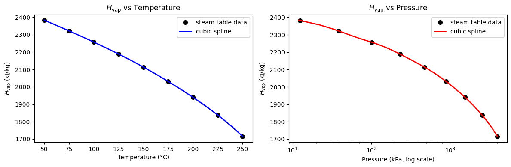
Interpolated H_vap at T = 160 °C : 2081.66 kJ/kg
Interpolated H_vap at P = 620 kPa : 2082.03 kJ/kg
# ── Compare linear vs cubic interpolation on steam table ─────────────────────
f_lin_steam = interp1d(T_steam, Hvap, kind='linear')
f_cub_steam = interp1d(T_steam, Hvap, kind='cubic')
T_test = np.array([85.0, 110.0, 140.0, 190.0, 230.0])
print(f"{'T (C)':>7} {'Linear (kJ/kg)':>16} {'Cubic (kJ/kg)':>15} {'Diff (kJ/kg)':>14}")
print("-" * 60)
for T_val in T_test:
h_lin = float(f_lin_steam(T_val))
h_cub = float(f_cub_steam(T_val))
print(f"{T_val:>7.0f} {h_lin:>16.2f} {h_cub:>15.2f} {h_cub - h_lin:>14.3f}")
print("\nCubic interpolation follows the curvature better — preferred for accurate engineering work.")
T (C) Linear (kJ/kg) Cubic (kJ/kg) Diff (kJ/kg)
------------------------------------------------------------
85 2295.60 2295.99 0.392
110 2229.54 2230.14 0.596
140 2143.62 2144.50 0.879
190 1976.32 1977.38 1.062
230 1813.38 1815.35 1.970
Cubic interpolation follows the curvature better — preferred for accurate engineering work.
12.7 Summary#
Concept |
Tool / Formula |
When to use |
|---|---|---|
Polynomial evaluation |
|
Evaluate a stored coefficient array at \(x\) |
Polynomial object |
|
Callable; |
Least-squares fit |
|
Fit noisy or tabulated data; keep degree small |
Residuals |
\(e_i = y_i - p(x_i)\) |
Signed error at each data point |
MAE |
\(\frac{1}{N}\sum|e_i|\) |
Average error in original units; easy to interpret |
MSE |
\(\frac{1}{N}\sum e_i^2\) |
Penalizes large errors; units are \(y^2\) |
\(R^2\) |
\(1 - \sum e_i^2 / \sum(y_i-\bar{y})^2\) |
Fraction of variance explained; 1 = perfect |
Taylor series |
\(\sum f^{(n)}(a)/n! \cdot (x-a)^n\) |
Approximate nonlinear functions locally |
Linearization |
First-order Taylor around \(T_0\) |
Reactor stability, control design |
Lagrange interp |
|
Exact through data; avoid for large \(n\) |
Runge’s phenomenon |
Oscillation with high-degree, equally spaced nodes |
Signal to switch to splines |
Cubic spline |
|
Smooth interpolation of tables; preferred |
Piecewise interp |
|
Quick linear or cubic; good for data look-ups |
Rule of thumb for ChE data:
Use
np.polyfitwith degree 2–4 for smooth physical properties (\(C_p\), \(\mu\), \(k\))Use
CubicSplinewhen you need to interpolate a table and preserve curvatureNever use a single high-degree polynomial for interpolation — use splines instead
Always plot the fit and report MAE/\(R^2\) before trusting any model